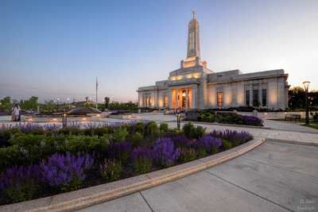

Visual Hierarchy

The Minecraft website employs several elements of the Z-pattern layout to enhance visual hierarchy and guide user attention effectively:
1. Top Left to Bottom Right Movement:
Logo and Navigation: The Minecraft logo and primary navigation bar are typically located at the top left corner of the website. This area serves as the starting point for users and draws initial attention.
Main Content Flow: From the top left, users are guided diagonally down to the bottom right, where secondary but important elements like social media links, additional resources, or footer information are often placed.
2. Primary Focus Areas:
Hero Section: Upon landing on the homepage, the hero section often occupies the top part of the screen. It prominently features the latest game updates, promotions, or important announcements using large visuals (like game screenshots or promotional artwork) and concise, compelling text.
Call-to-Action (CTA): Directly below or within the hero section, a prominent CTA button (e.g., "Get Minecraft") stands out, encouraging users to take action.
3. Secondary Information Flow:
Secondary Sections: As users scroll down the page, secondary sections such as featured content (like new game features or community creations), news updates, or support information are arranged in a logical sequence.
Sidebar or Additional Navigation: Depending on the layout, a sidebar or additional navigation menu on the left or right side may complement the main content flow, offering quick access to specific sections or resources.
4. Visual Elements and Design Principles:
Typography and Color: Headings, subheadings, and key text elements use contrasting colors and appropriate typography (e.g., bold, larger fonts for headings; smaller, regular fonts for body text) to distinguish hierarchy and facilitate readability.
Whitespace: Ample whitespace around key elements helps in separating different sections and prevents visual clutter, maintaining a clean and organized layout.
5. Responsive Design Considerations:
Adaptability: The Z-pattern layout is adapted for responsiveness, ensuring that the visual hierarchy remains effective across different devices (desktops, tablets, mobile phones). Elements are rearranged or resized to maintain readability and accessibility.
Conclusion:
By effectively utilizing the Z-pattern layout, the Minecraft website not only enhances visual hierarchy but also ensures that users can easily navigate through the content, find important information, and engage with key actions, thereby enhancing the overall user experience.
LinkIn

The LinkedIn website utilizes the rule of thirds model in its design to create a balanced and visually appealing layout. Here's an explanation of how LinkedIn applies this design principle:
1. Grid Structure and Layout:
Grid System: LinkedIn employs a grid-based layout that divides the page into thirds both horizontally and vertically. This grid helps organize content into sections that are visually balanced and aligned.
Content Placement: Key elements such as the main navigation, user profile information, news feed, and sidebar widgets are strategically placed within these grid sections. For instance, the news feed might occupy one-third of the screen width, while the profile information and sidebar occupy the other two-thirds.
2. Visual Hierarchy:
Focal Points: Elements such as the user's profile picture, the primary navigation bar, and the central news feed are positioned at intersections or along the lines of the grid's thirds. This placement draws attention and guides users' focus effectively.
Call-to-Action (CTA): LinkedIn places important CTAs, such as "Connect", "Message", or "Post a Job", within prominent positions that align with the intersections of the grid, making them easily accessible and noticeable.
3. Balanced Composition:
Equilibrium: By distributing content and visual elements across the grid's thirds, LinkedIn achieves a sense of balance and harmony in its design. This prevents any single section from appearing overloaded or neglected.
Whitespace: Utilizing whitespace effectively between and around grid sections helps LinkedIn maintain a clean and organized appearance, enhancing readability and user experience.
4. Responsive Design Considerations:
Adaptability: The rule of thirds model is adapted to ensure responsiveness across various devices (desktops, tablets, mobile phones). Elements are resized and rearranged dynamically while maintaining the underlying grid structure, ensuring consistency and usability.
5. Aesthetic Appeal and User Engagement:
Visual Appeal: The use of the rule of thirds contributes to LinkedIn's professional and polished aesthetic, reinforcing its brand identity as a professional networking platform.
User Engagement: Clear visual hierarchy and balanced composition help users navigate the site intuitively, find relevant content efficiently, and engage with key features seamlessly.
Conclusion:
By effectively utilizing the rule of thirds in its design, LinkedIn enhances visual balance, creates a clear hierarchy of information, and improves overall user experience by guiding user attention effectively while maintaining a cohesive and organized layout.
Church of Jesus Christ of Latterday Saints
Church of Jesus Christ of Latterday Saints

The Church of Jesus Christ of Latter-day Saints (LDS Church) website applies principles from Hick's Law to enhance user experience and decision-making efficiency. Here’s an explanation of how it utilizes Hick's Law in its design:
1. Simplified Navigation and Menu Structure:
Reduced Options: The website employs a streamlined navigation menu that categorizes content into clear, logical sections. This reduces the number of choices users face when navigating the site.
Clear Labels: Menu items are labeled concisely and descriptively, making it easier for users to understand their options quickly and navigate to relevant sections without confusion.
2. Focused Content Presentation:
Hierarchy of Information: Content is organized hierarchically, with important and frequently accessed sections prominently featured. Sections related to beliefs, teachings, and resources for members are easily accessible from the main navigation.
Priority Placement: Key actions or information, such as accessing scripture resources, finding local congregations, or learning about core beliefs, are prioritized and prominently displayed on the homepage and main landing pages.
3. Progressive Disclosure of Information:
Layered Content: Instead of overwhelming users with extensive information upfront, the LDS Church website often employs progressive disclosure techniques. Deeper or less frequently accessed content is nested within primary sections, accessible through clear pathways or links.
Expandable Sections: Detailed information about doctrines, organizational structure, or community activities may be presented in expandable sections or accordions, allowing users to delve deeper into topics of interest without cluttering the initial view.
4. Minimization of Distractions:
Focused Design: The website design avoids unnecessary elements or distractions that could divert attention from primary tasks or content exploration. This minimalistic approach helps maintain user focus on key decision points or desired actions.
Visual Hierarchy: Elements such as typography, color contrasts, and spacing are used to guide users’ attention effectively towards important content and calls-to-action, further supporting decision-making processes.
5. Responsive and Accessible Design:
Device Compatibility: Hick's Law principles are adapted for responsive design, ensuring that navigation and content presentation remain intuitive across various devices (desktops, tablets, mobile phones).
Accessibility Features: Considerations for accessibility, such as text readability, contrast ratios, and navigation aids, are integrated to support users with diverse needs in accessing and navigating the website efficiently.
Conclusion:
By incorporating Hick's Law principles into its design strategy, the LDS Church website enhances user experience by simplifying navigation, presenting information clearly, and minimizing cognitive overload. This approach facilitates quicker decision-making for users and supports their engagement with relevant content and actions on the site, ultimately enhancing overall usability and satisfaction.